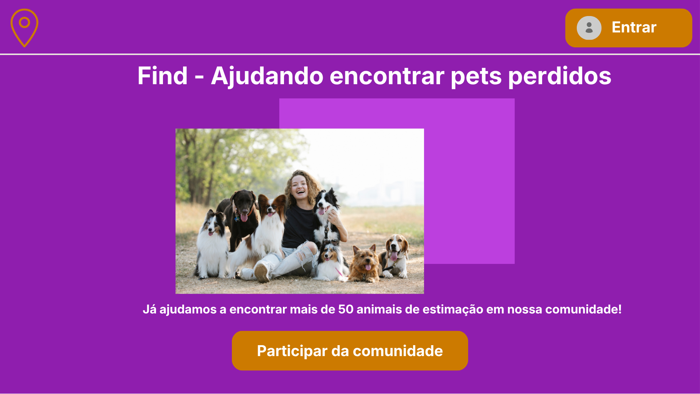
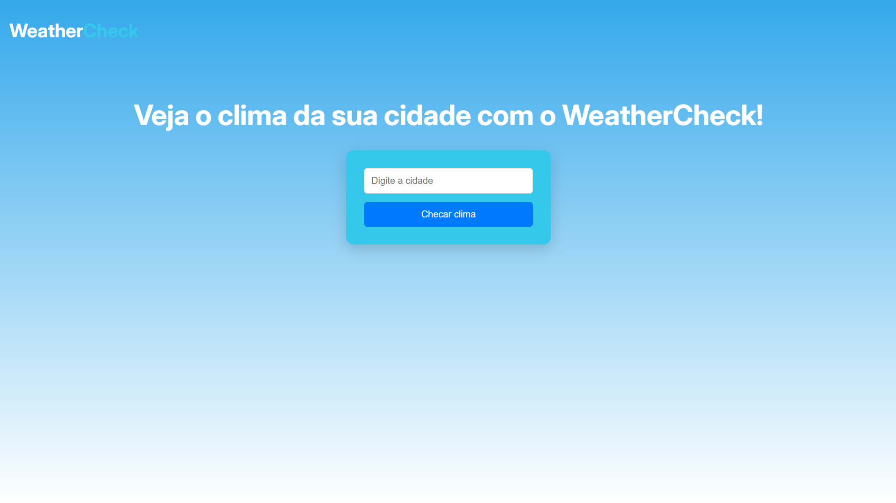
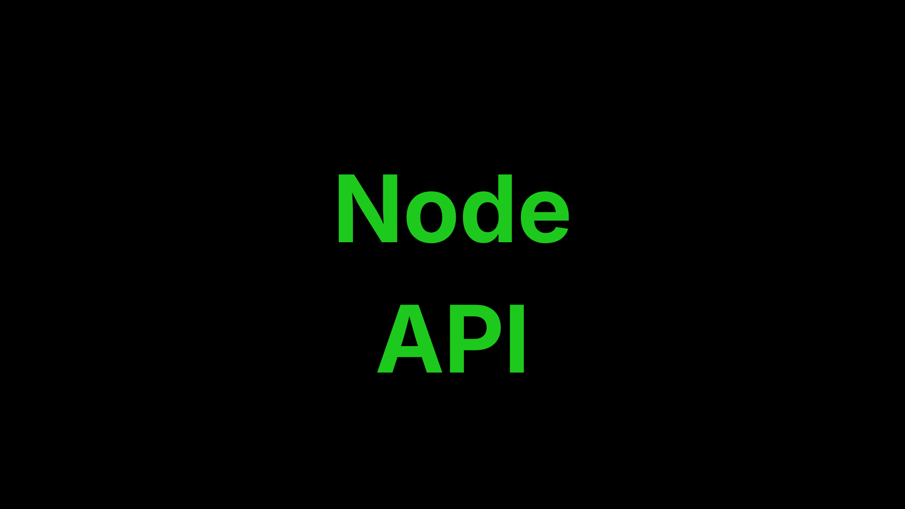

Renato Fillipo
Back-End Developer
// Inicializando perfil de desenvolvedor...
> const dev = "Renato Fillipo";
> const status = "Graduando na Facens";
> console.log("Olá! Sou o Renato, um desenvolvedor Back-End.");
Olá! Sou o Renato! Um desenvolvedor Back-End focado em construir aplicações reais e evoluir cada vez mais.
Sou focado em desenvolvimento com NodeJs e banco de dados.
Sobre mim
Olá! Sou o Renato Fillipo, estudante de Análise e Desenvolvimento de Sistemas na FACENS e desenvolvedor focado no ecossistema Back-End.
Minha jornada na tecnologia começou em 2022. O curso de ADS tem me proporcionado a base técnica necessária para entender o ciclo de vida do software, enquanto o desenvolvimento web me permite transformar requisitos complexos em produtos reais. Hoje, meu foco principal é Node.js, onde aplico práticas rigorosas de segurança, como autenticação JWT e criptografia de dados.
Busco sempre unir o raciocínio lógico da análise de sistemas com a agilidade do desenvolvimento moderno para criar APIs que sejam, acima de tudo, eficientes, seguras e escaláveis.
Projetos

Find - Busca de Pets
Plataforma Full-Stack para anúncio de pets perdidos com sistema de autenticação, criptografia e upload de imagens.

WeatherCheck
Um projeto desenvolvido para estudar o uso de APIs externas. Neste projeto utilizar a API da OpenWeatherMap. No site é possível visualizar o clima em tempo real de cidades pelo mundo.

API de Estacionamento
API back-end desenvolvida em Node.js (com Express e SQLite) para o gerenciamento completo de vagas e registros de estacionamento. O sistema permite realizar operações de CRUD (Listar, Cadastrar, Atualizar e Deletar) de forma eficiente, estruturando rotas e controladores focados em escalabilidade e organização de código.